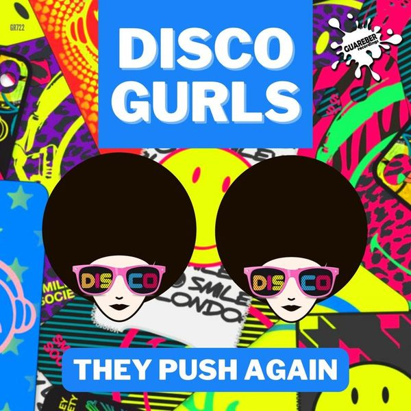

I 24 dischi
 1
30ANDRY J
1
30ANDRY J
 2
Shooting DartsDimitri Vegas & Like Mike, R3HAB & Prezioso
2
Shooting DartsDimitri Vegas & Like Mike, R3HAB & Prezioso
 3
EL SOLPROVENZANO
3
EL SOLPROVENZANO
 4
FeelingJack Back
4
FeelingJack Back
 5
King Of My CastleCrazibiza, Realcycles
5
King Of My CastleCrazibiza, Realcycles
 6
KanaJude & Frank, Robin Novaku
6
KanaJude & Frank, Robin Novaku
 7
Never EnoughMarco Lys
7
Never EnoughMarco Lys
 8
DestinationsAndrea Oliva
8
DestinationsAndrea Oliva

9 They Push AgainDisco Gurls 10
Crazy What Love Can DoDavid Guetta, Becky Hill & Ella Henderson
10
Crazy What Love Can DoDavid Guetta, Becky Hill & Ella Henderson
 11
Gotta Let U GoDon Diablo x Dominica
11
Gotta Let U GoDon Diablo x Dominica
 12
Ready or notOBS
12
Ready or notOBS
 13
Sun is darkWill K
13
Sun is darkWill K
 14
Night rideZen it
14
Night rideZen it
 15
Don’t Stop ItJaydan Jaydan Wolf, Nicola Fasano
15
Don’t Stop ItJaydan Jaydan Wolf, Nicola Fasano
 16
TreizeDamien N-Drix, Mosimann, STV
16
TreizeDamien N-Drix, Mosimann, STV
 17
Sun Goes DownDubdogz, Zerky
17
Sun Goes DownDubdogz, Zerky
 18
Déjà VuYves V x INNA x Janieck
18
Déjà VuYves V x INNA x Janieck
 19
I Wanna LiveGate 21 & Michael Roman
19
I Wanna LiveGate 21 & Michael Roman
 20
Sacrifice (Dj Vincenzino Mash up Mix)The Weeknd
20
Sacrifice (Dj Vincenzino Mash up Mix)The Weeknd
 21
Rider (Original Mix)Bassel Darwish
21
Rider (Original Mix)Bassel Darwish
 22
Mar & MarineroVlada Asanin & Wayne Madiedo
♪
23
On My Mind (Original Mix)Crazy Cousinz
22
Mar & MarineroVlada Asanin & Wayne Madiedo
♪
23
On My Mind (Original Mix)Crazy Cousinz
 24
Guaya (Original Mix)Oravla Ziur
24
Guaya (Original Mix)Oravla Ziur
La tracklist
- 1 30 ANDRY J Bang Record
- 2 Shooting Darts Dimitri Vegas & Like Mike, R3HAB & Prezioso Epic Amsterdam
- 3 EL SOL PROVENZANO WEPLAY Music
- 4 Feeling Jack Back Defected Records
- 5 King Of My Castle Crazibiza, Realcycles PAUSE RECORDS
- 6 Kana Jude & Frank, Robin Novaku SONO Music
- 7 Never Enough Marco Lys Armada Music
- 8 Destinations Andrea Oliva All I Need
- 9 They Push Again Disco Gurls Guareber Recordings
- 10 Crazy What Love Can Do David Guetta, Becky Hill & Ella Henderson Parlophone UK
- 11 Gotta Let U Go Don Diablo x Dominica WEPLAY Music
- 12 Ready or not OBS Hexagon
- 13 Sun is dark Will K Hexagon
- 14 Night ride Zen it Hexagon
- 15 Don’t Stop It JaydanJaydan Wolf, Nicola Fasano CONTROVERSIA
- 16 Treize Damien N-Drix, Mosimann, STV Spinnin' Records
- 17 Sun Goes Down Dubdogz, Zerky Spinnin' Records
- 18 Déjà Vu Yves V x INNA x Janieck Spinnin' Records
- 19 I Wanna Live Gate 21 & Michael Roman Energy One
- 20 Sacrifice (Dj Vincenzino Mash up Mix) The Weeknd XO / Republic Records
- 21 Rider (Original Mix) Bassel Darwish Distance Music
- 22 Mar & Marinero Vlada Asanin & Wayne Madiedo 45ke
- 23 On My Mind (Original Mix) Crazy Cousinz Nostalgic
- 24 Guaya (Original Mix) Oravla Ziur Happy Techno Music